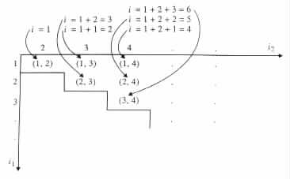
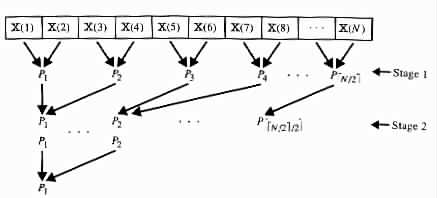

[next] [tail] [up]
A parallel program  is a system <P, X, Y> of infinitely many deterministic
sequential programs P1, P2, ¼ , infinitely many input variables X(1), X(2), ¼ , and
infinitely many output variables Y(1), Y(2), ¼ The sequential programs P1, P2, ¼
are assumed to be identical, except for the ability of each Pi to refer to its own index i. That
is, for each pair of indices i and j the sequential program Pj can be obtained from the
sequential program Pi by replacing each reference to i in Pi with a reference to
j.
is a system <P, X, Y> of infinitely many deterministic
sequential programs P1, P2, ¼ , infinitely many input variables X(1), X(2), ¼ , and
infinitely many output variables Y(1), Y(2), ¼ The sequential programs P1, P2, ¼
are assumed to be identical, except for the ability of each Pi to refer to its own index i. That
is, for each pair of indices i and j the sequential program Pj can be obtained from the
sequential program Pi by replacing each reference to i in Pi with a reference to
j.
At the start of a computation, the input of  is stored in its input variables. An input
that consists of N values is stored in X(1), ¼ , X(N), where each of the variables holds one
of the input values. During the computation,
is stored in its input variables. An input
that consists of N values is stored in X(1), ¼ , X(N), where each of the variables holds one
of the input values. During the computation,  employs P1, ¼ , Pm for some m dependent on
the input. Each Pi is assumed to know the value of N and the value of m. Upon halting,
the output of
employs P1, ¼ , Pm for some m dependent on
the input. Each Pi is assumed to know the value of N and the value of m. Upon halting,
the output of  is assumed to be in its output variables. An output that consists of K values
is assumed to be in Y(1), ¼ , Y(K), where each of the variables holds one output
value.
is assumed to be in its output variables. An output that consists of K values
is assumed to be in Y(1), ¼ , Y(K), where each of the variables holds one output
value.
Each step in a computation of  consists of four phases as follows.
consists of four phases as follows.
- Each Pi reads an input value from one of the input variables X(1), ¼ , X(N).
- Each Pi performs some internal computation.
- Each Pi may write into one of the output variables Y(1), Y(2), ¼
- P1, ¼ , Pm communicate any desirable information among themselves.
Each of the phases is synchronized to be carried in parallel by all the sequential programs
P
1, ¼ , Pm.
Although two or more sequential programs may read simultaneously from the same
input variable, at no step may they write into the same output variable.
The depth of a computation of a parallel program  = <P, X, Y> is the number of
steps executed during the computation. The parallel program is said to have depth
complexity D(N) if for each N all its computations, over the inputs that consist of N
values, have at most depth D(N). The parallel program
= <P, X, Y> is the number of
steps executed during the computation. The parallel program is said to have depth
complexity D(N) if for each N all its computations, over the inputs that consist of N
values, have at most depth D(N). The parallel program  is said to have size complexity
Z(N) if it employs no sequential programs other than P1, ¼ , PZ(N) on each input that
consists of N values.
is said to have size complexity
Z(N) if it employs no sequential programs other than P1, ¼ , PZ(N) on each input that
consists of N values.
The time required by a computation of a parallel program and that program's time
complexity can be defined in a similar way. However, such notions are unmeasurable here
because we have not yet specified how sequential programs communicate.
Example 7.1.1
Consider the problem Q of selecting the smallest value in a given set S. Restrict your
attention to parallel programs that in each step allow each sequential program to receive
information from no more than one sequential program.
The problem is solvable by a parallel program  1 = <P, X, Y> of size complexity
Z(N) ³ N(N - 1)/2 and a constant depth complexity, where N denotes the cardinality
of the given set S. The parallel program can use a brute-force approach for such a
purpose.
1 = <P, X, Y> of size complexity
Z(N) ³ N(N - 1)/2 and a constant depth complexity, where N denotes the cardinality
of the given set S. The parallel program can use a brute-force approach for such a
purpose.
Specifically, let each pair (i1, i2), such that 1 £ i1 < i2 £ N, correspond to a
different i, such that 1 £ i £ N(N - 1)/2. For instance, the correspondence can be
of the form i = 1 + 2 + · · · + (i2 - 2) + i1 = (i2 - 2)(i2 - 1)/2 + i1 (see
Figure 7.1.1).

| Figure 7.1.1 | An ordering i on the pairs (i1, i2), such that 1 £ i1 < i2. |
|
Let P(i1,i2) denote the sequential program Pi, where (i1, i2) is the pair that corresponds to
i.
Each computation of  starts with a step in which each Pi derives the pair (i1, i2) that
corresponds to i, 1 £ i £ N(N - 1)/2. The computation continues with two steps in
which each P(i1,i2) reads the elements of S that are stored in X(i1) and X(i2). In
addition, in the third step each P(i1,i2) compares the values read from X(i1) and
X(i2), and communicates a "negative" outcome to Pi1 or Pi2. This outcome is
communicated to Pi1 if X(i1) ³ X(i2). Otherwise, the outcome is communicated to Pi2.
During the fourth step, the only active sequential program is Pj, 1 £ j £ N,
which did not receive a negative outcome. During that step Pj reads the value of
X(j) and writes it out into Y(1). The computation terminates after the fourth
step.
starts with a step in which each Pi derives the pair (i1, i2) that
corresponds to i, 1 £ i £ N(N - 1)/2. The computation continues with two steps in
which each P(i1,i2) reads the elements of S that are stored in X(i1) and X(i2). In
addition, in the third step each P(i1,i2) compares the values read from X(i1) and
X(i2), and communicates a "negative" outcome to Pi1 or Pi2. This outcome is
communicated to Pi1 if X(i1) ³ X(i2). Otherwise, the outcome is communicated to Pi2.
During the fourth step, the only active sequential program is Pj, 1 £ j £ N,
which did not receive a negative outcome. During that step Pj reads the value of
X(j) and writes it out into Y(1). The computation terminates after the fourth
step.
The problem Q can be solved also by a parallel program 2 = <P, X, Y> of size
complexity Z(N) = éN/2ù and depth complexity D(N) = O(log N). In this case the
program simply repeatedly eliminates about half of the elements from S, until S is left
with a single element.
At the first stage of each computation each Pi, 1 £ i £ éN/2ù, reads the
values stored in X(2i - 1) and X(2i). In addition, each Pi compares the values
that it read. If X(2i - 1) < X(2i), then Pi communicates to Péi/2ù the value of
X(2i - 1). Otherwise, Pi communicates to Péi/2ù the value of X(2i). At the end of the
first stage P1, ¼ , Péén/2ù/2ù hold the elements of S that have not been eliminated
yet.
At the start of each consecutive stage of the computation, a sequential program Pi
determines itself active if and only if it has been communicated some values of S in the
previous stage. During a given stage, each active Pi compares the values a1 and a2 that
were communicated to it in the previous stage. If the values satisfy the relation
a1 < a2, then Pi communicates a1 to Péi/2ù. Otherwise, Pi communicates a2 to
P
éi/2ù.
After O(log N) stages only P1 is active, and it holds a single value of S. Then P1
writes the value into Y(1) and the computation terminates.
Figure 7.1.2

| Figure 7.1.2 | Flow of information. |
|
illustrates the flow of information in  2 during a computation of the parallel
program.
2 during a computation of the parallel
program.
Similarly, the problem Q can be solved by a parallel program 3 = <P, X, Y> of size
complexity Z(N) < éN/2ù and depth complexity O(N/Z(N) + log Z(N)). At the start
of each computation each Pi computes m = Z(N) and finds independently in O(N/m)
steps the smallest value in X(éù(i - 1) + 1), ¼ , X(éùi). Then, as in the previous case of
2, P1, ¼ , Pm proceed in parallel to determine in O(log m) steps the smallest value among
the m values that they hold. 
[next] [front] [up]